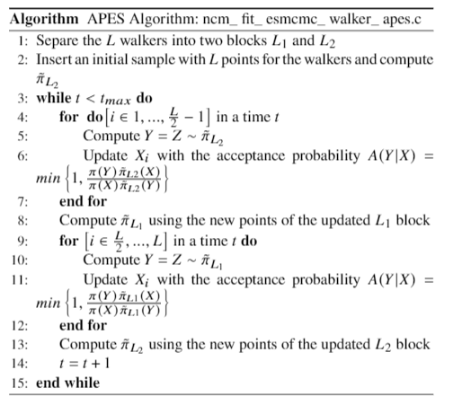

| Top |
NcmFitESMCMCWalkerAPESNcmFitESMCMCWalkerAPES — Ensemble sampler Markov Chain Monte Carlo walker - apes move. |
| NcmFitESMCMCWalkerAPESKType | kernel-type | Read / Write / Construct |
| NcmFitESMCMCWalkerAPESMethod | method | Read / Write / Construct |
| double | over-smooth | Read / Write / Construct |
| gboolean | use-interp | Read / Write / Construct |
| gboolean | use-threads | Read / Write / Construct |
GEnum ├── NcmFitESMCMCWalkerAPESKType ╰── NcmFitESMCMCWalkerAPESMethod GObject ╰── NcmFitESMCMCWalker ╰── NcmFitESMCMCWalkerAPES
Implementing apes move walker for NcmFitESMCMC (affine invariant).
This object implements the Approximate Posterior Ensemble Sample (APES) step proposal for a walker. This proposal was developed by Sandro Dias Pinto Vitenti and implemented in this library. Below there is a description of the proposal.
The APES proposal consists of using radial basis interpolation to generate an interpolant $\tilde{\pi}$ from a target distribution $\pi$ and use this interpolant to propose new points for the walker. By using a distribution $\tilde{\pi}$ that resembles the original target distribution, the APES proposal generates samples that converge faster to the target distribution and are more independent when compared to other step proposals.
The APES step is implemented as follows: suppose that there are $L$ walkers. They are divided into two blocks $L_1$ and $L_2$, containing the first and the second half of the walkers respectively. When proposing new points $Y$ for the walkers in the $L_1$ block, we use the points in the $L_2$ block to generate an interpolant $\tilde{\pi}_{L_2}$ and then propose points $Y \sim \tilde{\pi}_{L_2}$ for the $L_1$ block. These points are accepted or rejected based on an acceptance probability $A(Y|X)$, and after the points of the first block are updated, we do the same procedure for the $L_2$ block using the $L_1$ block. This procedure can be seen in the pseudocode below.

The user must provide the input the values: nwalkers
, nparams
, method
, k
_type
, over
_smooth
$ and use
_interp
- ncm_fit_esmcmc_walker_apes_new_full().
The user can also initialize the object with: nwalkers
, nparams
- ncm_fit_esmcmc_walker_apes_new() and let the remaining parameters as default,
which are defined in the properties of the class.
For more information about the algorithm, check the explanation below.
- This object shall be used in the NcmFitESMCMC class to generate a Monte Carlo Markov Chain using an ensemble sampler. To see an example of its implementation, check the file example_rosenbrock.py in NumCosmo/examples.
- Regarding the radial basis interpolation method is implemented, check the NcmStatsDist class.
- Regarding the types of kernel used in the interpolation method as the radial basis function, check the NcmStatsDistKernel class.
NcmFitESMCMCWalkerAPES * ncm_fit_esmcmc_walker_apes_new (guint nwalkers,guint nparams);
Creates a new NcmFitESMCMCWalkerAPES to be used
with nwalkers
.
NcmFitESMCMCWalkerAPES * ncm_fit_esmcmc_walker_apes_new_full (guint nwalkers,guint nparams,NcmFitESMCMCWalkerAPESMethod method,NcmFitESMCMCWalkerAPESKType k_type,gdouble over_smooth,gboolean use_interp);
Creates a new NcmFitESMCMCWalkerAPES to be used with nwalkers
,
interpolation method method
, kernel kernel
and over-smooth parameter
over_smooth
. If use_interp
is TRUE computes the approximation
interpolating the computed likelihood values, otherwise, use standard
kernel density estimation.
NcmFitESMCMCWalkerAPES *
ncm_fit_esmcmc_walker_apes_ref (NcmFitESMCMCWalkerAPES *apes);
Increases the reference count of apes
atomically.
void
ncm_fit_esmcmc_walker_apes_free (NcmFitESMCMCWalkerAPES *apes);
Decreases the reference count of apes
atomically.
void
ncm_fit_esmcmc_walker_apes_clear (NcmFitESMCMCWalkerAPES **apes);
Decreases the reference count of *apes
atomically and sets the pointer *apes
to null.
void ncm_fit_esmcmc_walker_apes_set_method (NcmFitESMCMCWalkerAPES *apes,NcmFitESMCMCWalkerAPESMethod method);
Sets the estimation method to be used when building the posterior approximations.
void ncm_fit_esmcmc_walker_apes_set_k_type (NcmFitESMCMCWalkerAPES *apes,NcmFitESMCMCWalkerAPESKType k_type);
Sets the kernel to be used when building the posterior approximations.
void ncm_fit_esmcmc_walker_apes_set_over_smooth (NcmFitESMCMCWalkerAPES *apes,const gdouble os);
Sets the over smooth parameter to adjust the interpolation bandwidth.
NcmFitESMCMCWalkerAPESMethod
ncm_fit_esmcmc_walker_apes_get_method (NcmFitESMCMCWalkerAPES *apes);
Gets the currently used estimation method.
NcmFitESMCMCWalkerAPESKType
ncm_fit_esmcmc_walker_apes_get_k_type (NcmFitESMCMCWalkerAPES *apes);
Gets the currently used kernel.
gdouble
ncm_fit_esmcmc_walker_apes_get_over_smooth
(NcmFitESMCMCWalkerAPES *apes);
Gets the currently used over-smooth parameter.
void ncm_fit_esmcmc_walker_apes_use_interp (NcmFitESMCMCWalkerAPES *apes,gboolean use_interp);
Sets whether to use interpolation of the posterior approximation (use_interp
== TRUE)
or kernel density estimate (use_interp
== FALSE).
gboolean
ncm_fit_esmcmc_walker_apes_interp (NcmFitESMCMCWalkerAPES *apes);
void ncm_fit_esmcmc_walker_apes_set_use_threads (NcmFitESMCMCWalkerAPES *apes,gboolean use_threads);
Sets whether to use threads for building the posterior approximation.
gboolean
ncm_fit_esmcmc_walker_apes_get_use_threads
(NcmFitESMCMCWalkerAPES *apes);
void ncm_fit_esmcmc_walker_apes_peek_sds (NcmFitESMCMCWalkerAPES *apes,NcmStatsDist **sd0,NcmStatsDist **sd1);
Peeks the currently used NcmStatsDist objects.
void ncm_fit_esmcmc_walker_apes_set_local_frac (NcmFitESMCMCWalkerAPES *apes,gdouble local_frac);
Sets the local fraction to use in VKDE.
void ncm_fit_esmcmc_walker_apes_set_cov_fixed_from_mset (NcmFitESMCMCWalkerAPES *apes,NcmMSet *mset);
Sets the fixed covariance to the KDE interpolation using
the scales set into mset
.
void
ncm_fit_esmcmc_walker_apes_set_cov_robust_diag
(NcmFitESMCMCWalkerAPES *apes);
Sets the fixed covariance to the KDE interpolation using robust estimates of scale.
void
ncm_fit_esmcmc_walker_apes_set_cov_robust
(NcmFitESMCMCWalkerAPES *apes);
Sets the fixed covariance to the KDE interpolation using robust estimates of scale.
#define NCM_TYPE_FIT_ESMCMC_WALKER_APES (ncm_fit_esmcmc_walker_apes_get_type ())
“kernel-type” property“kernel-type” NcmFitESMCMCWalkerAPESKType
Kernel used in posterior approximation.
Owner: NcmFitESMCMCWalkerAPES
Flags: Read / Write / Construct
Default value: NCM_FIT_ESMCMC_WALKER_APES_KTYPE_CAUCHY
“method” property“method” NcmFitESMCMCWalkerAPESMethod
Method used in posterior approximation.
Owner: NcmFitESMCMCWalkerAPES
Flags: Read / Write / Construct
Default value: NCM_FIT_ESMCMC_WALKER_APES_METHOD_VKDE
“over-smooth” property “over-smooth” double
Over-smooth parameter used to adjust kernel bandwidth.
Owner: NcmFitESMCMCWalkerAPES
Flags: Read / Write / Construct
Allowed values: [1e-10,1e+10]
Default value: 1
“use-interp” property“use-interp” gboolean
Whether to use interpolation to build the posterior approximation.
Owner: NcmFitESMCMCWalkerAPES
Flags: Read / Write / Construct
Default value: TRUE
“use-threads” property“use-threads” gboolean
Whether to use threads when building the posterior approximation.
Owner: NcmFitESMCMCWalkerAPES
Flags: Read / Write / Construct
Default value: FALSE